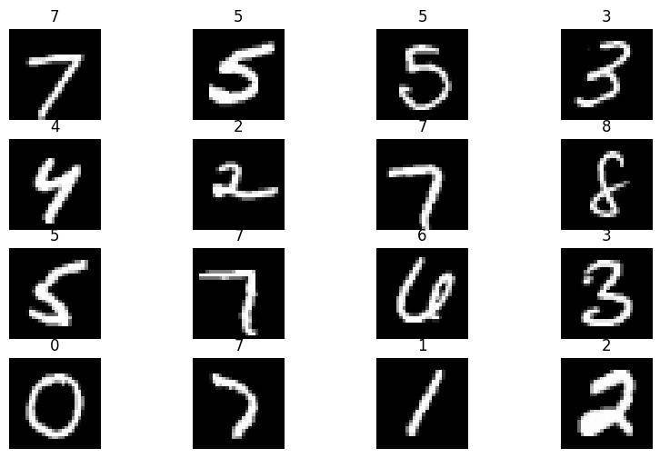
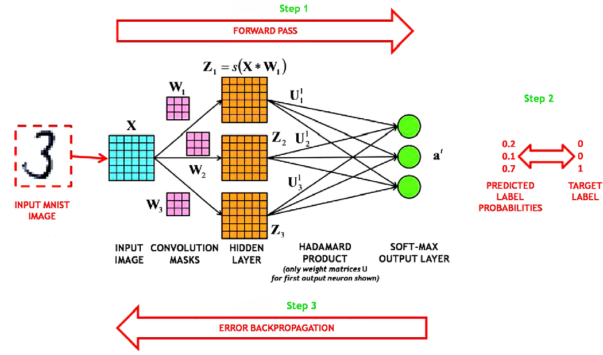
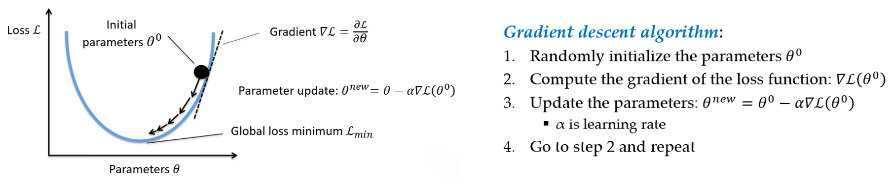
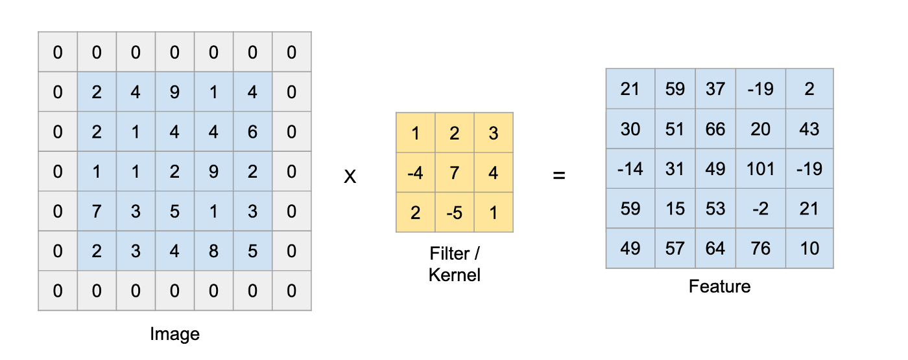
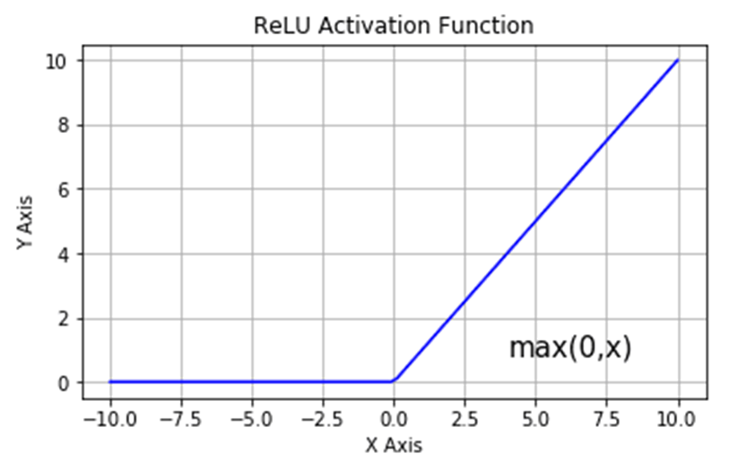
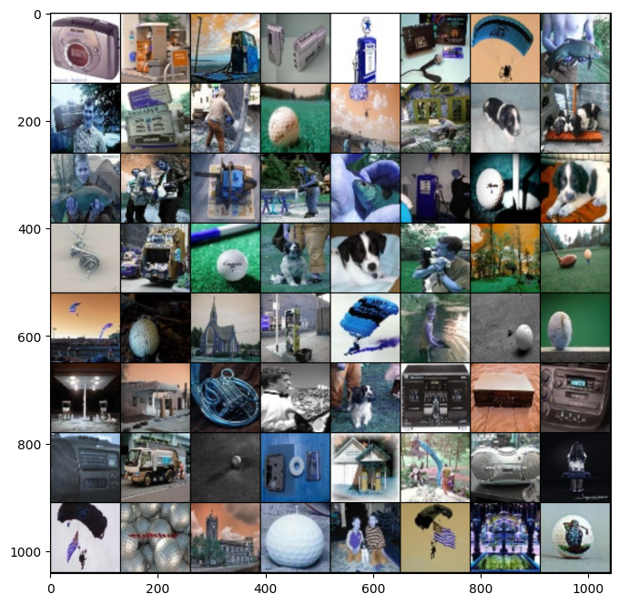
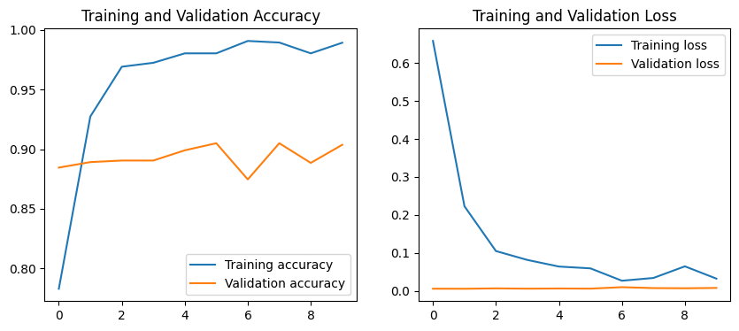

# import libraries
import numpy as np
import matplotlib.pyplot as plt
import os
import pandas as pd
from PIL import Image
import torch
import torch.nn as nn
from torch.utils.data import Dataset, DataLoader, Subset
import torch.optim as optim
# trochvision is part of PyTorch consisting of models and datasets for computer vision
import torchvision
from torchvision import datasets, transforms
from torchvision.datasets import ImageFolderLecture 15 - Artificial Neural Networks with PyTorch


- 15.1 Introduction to PyTorch
- 15.2 Loading the Dataset
- 15.3 Training Neural Networks: Revisited
- 15.4 Creating, Training, and Evaluating the Model
- 15.5 Using a Custom Dataset and a Pretrained Model
- 15.6 Model Saving and Loading in PyTorch
- References
15.1 Introduction to PyTorch
PyTorch is currently one of the most popular deep learning frameworks. It is an open-source library built upon the Torch library, and it was developed by Meta AI (previously Facebook AI). It is now part of the Linux Foundation.
As we learned in Tutorial 7, PyTorch provides tensor operations that can conveniently be performed using CPU or GPU devices. It also provides automatic differentiation operations (autograd) with Neural Networks.
In this lecture we will explain how to train Neural Networks with PyTorch. PyTorch has similar functionality to TensorFlow-Keras, as it allows to import neural network layers, offers loss functions and optimizers, etc. It has a slightly lower-level of abstraction in comparison to TensorFlow-Keras. On the other hand, there are high-level libraries for PyTorch, such as PyTorch Lightning and fast.ai.
Let’s import the required libraries. In the next cell, we imported torch, several utility functions, and modules such as torch.nn that provides functions and tools for building and training neural networks, and torchvision that provides functions and tools for image processing and related computer vision tasks.
15.2 Loading the Dataset
We will use one of the most common deep learning datasets - MNIST (Modified National Institute of Standards and Technology database). MNIST is a dataset of handwritten digits from 0 to 9, containing 60,000 training images and 10,000 testing images. Each image has 28x28 pixels size.
PyTorch provides access to several datasets, and MNIST can be loaded conveniently by using the datasets.MNIST function. In the used arguments, root is the directory where the dataset exists, and transform can be used to apply data scaling, image resizing, or other transformation operations. Such operations are not required for this dataset.
training_data = datasets.MNIST(
root="data",
train=True,
download=True,
transform=transforms.ToTensor()
)
test_data = datasets.MNIST(
root="data",
train=False,
download=True,
transform=transforms.ToTensor()
)100%|██████████| 9.91M/9.91M [00:01<00:00, 5.84MB/s]
100%|██████████| 28.9k/28.9k [00:00<00:00, 153kB/s]
100%|██████████| 1.65M/1.65M [00:01<00:00, 1.45MB/s]
100%|██████████| 4.54k/4.54k [00:00<00:00, 11.1MB/s]print(training_data)Dataset MNIST
Number of datapoints: 60000
Root location: data
Split: Train
StandardTransform
Transform: ToTensor()print(test_data)Dataset MNIST
Number of datapoints: 10000
Root location: data
Split: Test
StandardTransform
Transform: ToTensor()The images in MNIST are gray images, and therefore, they have only one channel. To check the shape of the images we can use size() in PyTorch which corresponds to shape in NumPy.
print(training_data.data.size())
print(test_data.data.size())torch.Size([60000, 28, 28])
torch.Size([10000, 28, 28])Let’s visualize several randomly selected images from the training dataset, and show their class labels.
figure = plt.figure(figsize=(10, 6))
cols, rows = 4, 4
for i in range(1, cols * rows + 1):
sample_idx = torch.randint(len(training_data), size=(1,)).item()
img, label = training_data[sample_idx]
figure.add_subplot(rows, cols, i)
plt.title(label)
plt.axis("off")
plt.imshow(img.squeeze(), cmap="gray")
plt.show()
15.2.1 DataLoader
In PyTorch, DataLoader is an iterable object used for passing a batch of input data at each iteration during the model training. DataLoader takes as arguments the dataset that we are going to use, shuffle indicates if the data should be shuffled, and batch_size is self-explanatory. While we always need to shuffle the data in the training dataset to avoid correlated data (e.g., the training dataset can have first all 0 images, then 1 images, etc.), we don’t need to shuffle the test or validation datasets because they are not used for training.
train_dataloader = DataLoader(training_data, shuffle=True, batch_size=128)
test_dataloader = DataLoader(test_data, shuffle=False, batch_size=128)The output of DataLoader is a batch of input images and the corresponding target labels. To inspect a batch of data we need to use the iter method to obtain an iterator, and afterward we can use the next() function to iterate over the batches. Note that DataLoader converted the images into a format (1, 28, 28) where 1 is the number of channels of the images.
Note also that in PyTorch the default convention for representing the dimensions of images in tensors is the “channels first” format as in (1, 28, 28), as opposed to TensorFlow-Keras where the default convention is the “channels last” format as in (28, 28, 1).
# check if train_dataloader is an iterator
iter(train_dataloader) is train_dataloaderFalse# Inspect a batch of images and labels
batch_images, batch_labels = next(iter(train_dataloader))
print("Batch images shape:", batch_images.size())
print("Batch labels shape:", batch_labels.size())Batch images shape: torch.Size([128, 1, 28, 28])
Batch labels shape: torch.Size([128])15.3 Training Neural Networks: Revisited
Before explaining how to create and train NNs with PyTorch, let’s briefly review the section on training NNs from Lecture 12, as it will be helpful to understand the PyTorch code.
Training NNs is performed by iterative updates of the model parameters with the goal to minimize the difference between the model predictions and target labels.
Each iteration in the training phase includes the following 4 steps:
- Forward pass (forward propagation)
- Loss calculation
- Error backpropagation (backward pass)
- Model parameters update
Forward propagation or forward pass, involves passing the input data through all hidden layers of the neural network toward the output layer to obtain the network predictions. If the input data is an image, the image is transformed through the layers of the network, and for classification problems, the output is a vector of predicted class probabilities.
Loss calculation is the second step, in which the loss of the network is calculated as a difference between the network predictions and the target labels. For classification tasks, standard loss function is crossentropy loss, and for regression tasks loss functions include mean-squared deviation and mean absolute deviation.
Error backpropagation, also called backward pass or backward propagation involves propagating the predicted outputs back through the network, from the last layer backward toward the first layer. During the backward step, the gradients of the loss with respect to the model parameters \(\nabla\mathcal{L}(𝜃)\) are calculated. The gradients quantify the impact of changing the parameters in the network to the predicted outputs. Automatic calculation of the gradients (automatic differentiation) is available in PyTorch and all current deep learning libraries, which significantly simplifies the implementation of deep learning algorithms.
Model parameters update is the last step in which new values for the model parameters are calculated and updated, typically using the Gradient Descent algorithm.

Figure: Steps in training neural networks.
And to briefly review the Gradient Descent algorithm, it uses the gradient of the loss function to estimate the slope of the loss function. By updating the parameters in the opposite direction of the gradient of the loss \(\nabla\mathcal{L}\), the algorithm finds parameters \(𝜃\) for which the loss \(\mathcal{L}\) has a minimal value.

Figure: Gradient descent algorithm.
Almost all modern neural networks are trained by applying a modified version of the Gradient Descent algorithm. Examples of such advanced Gradient Descent algorithms include Adam, SGD (Stochastic Gradient Descent), RMSprop, Adagrad, Nadam, and others.
To train a neural network, the steps of forward pass, loss calculation, backward pass, and parameter update are performed iteratively for each batch of the input data. Each iteration through the input data constitutes one epoch. This is shown in the following simple pseudocode.
for epoch in number_of_epochs:
for batch in number_of_batches:
forward pass
calculate loss
backward pass (calculate the gradients)
update parametersFor predicting on test data (inference) only a forward pass through the model is needed, and it does not require to calculate the loss, perform the backward pass, or update the model parameters.
15.4 Creating, Training, and Evaluating the Model
15.4.1 Model Definition
We will define a Convolution Neural Network using the nn.Module in PyTorch, which is a superclass for creating neural networks in PyTorch. I.e., the CNN model will represent a subclass of the superclass nn.Module. Inheriting from the nn.Module allows to use various PyTorch functionalities for our model. Let’s use the name CNN for the subclass that we will use to instantiate our model.
In the __init__() constructor method of the CNN class, we will list the layers of the network as attributes of the class. For this task, let’s use 2 convolutional layers that we will name conv1 and conv2, a max-pooling layer maxpool, ReLU layer relu, and a dense layer named dense. The nn.Module also offers several other attributes and methods which we will inherit via super().__init__() (or we can also use nn.Module.__init__(self) to achieve the same result, as you may recall from the lecture on OOP).
Conv2d layers in PyTorch have similar arguments to the TensorFlow-Keras library, as follows:
- in_channels (int), number of input channels to the layer, which for the first layer in the network is the number of channels in input images, and for all other layers is the number of output channels from the preceding layer (recall that the
in_channelsargument is not provided in the TensorFlow-Keras layers and it is determined automatically, however in PyTorch we need to specify it). - out_channels (int), number of channels that are produced by the layer (i.e., the number of used convolutional filters).
- kernel_size (int or tuple), size of the convolving kernel (it is typically 3, and sometimes can also be 5, 7, etc.).
- padding (int or tuple, optional), padding can be added to both sides of the input images; default value is 0, i.e., no padding.
Regarding the image padding, note that applying a convolutional filter to an image produces a convolved image with a reduced size. To obtain a resulting feature map of the same size as the original image, padding is applied. For instance, in the figure below, a filter with a kernel size 3x3 is applied to a padded image of size 7x7, and the output is a feature with size 5x5. In this case, the original image of size 5x5 is padded with zeros on all four sides, and the size was changed to 7x7. In PyTorch padding=1 means that one row or column is added on all sides of the image. This is equivalent to padding='same' in TensorFlow-Keras.

Figure: Image padding.
Max pooling layers are defined the same as in TensorFlow-Keras, and have as argument the kernel size for the pooling operation. Most networks use kernel size of 2 for the pooling operation.
The outputs of convolutional layers are passed through a ReLU activation layer which is short for Rectified Linear Unit activation function. As we explained, activation functions introduce non-linearity to the layers in the model, which allows to learn complex relations between the inputs and outputs. Most modern neural networks apply ReLU activation function, or some variants of it. ReLU activation function is shown in the next figure, and it outputs 0 if the input is negative, or outputs the input if it is positive.

Figure: ReLU activation function.
Fully-connected (dense) layers in PyTorch are defined with the nn.Linear layer, and they have as arguments:
- in_features (int), number of input features to the layer (this argument is not provided in the TensorFlow-Keras Dense layer, it is determined automatically).
- out_features (int), number of output features of the layer.
After we define the layers in the model, we will add the method forward to define the forward pass for the model. For this model, we will use 2 blocks of convolutional, ReLU, and max-pooling layers, and a final dense layer to make the predictions. Also recall that in Lecture 13 we used the Flatten layer to convert the outputs from the convolutional layers into one-dimensional vectors. Here, we use torch.flatten() to flatten the tensors.
The Convolutional Neural Network in PyTorch defined below is equivalent to the following Convolutional Neural Network in TensorFlow-Keras.
# Define the layers in the model
inputs = Input(shape=(28, 28, 1))
conv1 = Conv2D(filters=16, kernel_size=3, padding='same')(inputs)
pool1 = MaxPooling2D()(conv1)
conv2 = Conv2D(filters=32, kernel_size=3, padding='same')(pool1)
pool2 = MaxPooling2D()(conv2)
flat = Flatten()(pool2)
outputs = Dense(10, activation='softmax')(flat)
# Define the model with inputs and outputs
cifar_cnn = Model(inputs, outputs)class CNN(nn.Module):
def __init__(self):
super().__init__()
# convolutional layers
self.conv1 = nn.Conv2d(in_channels=1, out_channels=16, kernel_size=3, padding=1)
self.conv2 = nn.Conv2d(in_channels=16, out_channels=32, kernel_size=3, padding=1)
# maxpooling layer
self.maxpool = nn.MaxPool2d(kernel_size=2)
# ReLU activation layer
self.relu = nn.ReLU()
# fully connected layer, output 10 classes
self.dense = nn.Linear(in_features=32 * 7 * 7, out_features=10)
def forward(self, x):
# sequence of layers
# first block
x = self.conv1(x)
x = self.relu(x)
x = self.maxpool(x)
# second block
x = self.conv2(x)
x = self.relu(x)
x = self.maxpool(x)
# flatten the output of the second block to 1D vector
x = torch.flatten(x, 1)
# output layer
output = self.dense(x)
return outputNext, we will create an instance of the CNN class, here named simply model.
model = CNN()In PyTorch we need to specify the device on which the model will be trained, i.e., whether we will use CPU, GPU, or TPU. We can do that with torch.device, as in the next cell.
I am using Google Colab with GPU available, therefore in the output of the cell the device type is 'cuda'.
CUDA (Compute Unified Device Architecture) is a library that allows using GPU computing for machine learning tasks, which parallelizes the computations, and speeds up the model training.
device = torch.device('cuda' if torch.cuda.is_available() else 'cpu')
devicedevice(type='cuda')Using to(device) will transfer the ConvNet model to the device, which in our case is GPU. And later, we will also move the data for training the model to the GPU.
model.to(device)CNN(
(conv1): Conv2d(1, 16, kernel_size=(3, 3), stride=(1, 1), padding=(1, 1))
(conv2): Conv2d(16, 32, kernel_size=(3, 3), stride=(1, 1), padding=(1, 1))
(maxpool): MaxPool2d(kernel_size=2, stride=2, padding=0, dilation=1, ceil_mode=False)
(relu): ReLU()
(dense): Linear(in_features=1568, out_features=10, bias=True)
)15.4.2 Model Training
Before training the model, we need to define a loss function and an optimizer. As we mentioned in Lecture 12, crossentropy loss is commonly used with classification problems, and Adam is a standardly used optimization algorithm.
# define loss function (cross-entropy)
criterion = nn.CrossEntropyLoss()
# define an optimizer (Adam)
optimizer = optim.Adam(model.parameters(), lr = 0.01)The above loss is equivalent to the sparse_categorical_crossentropy in TensorFlow-Keras. Therefore, if the target variable is in one-hot encoding format, we will need to first convert into 1D tensor containing the integer class labels. Similarly, if we would like to perform binary classification in PyTorch we can specify a binary crossentropy loss with nn.BCELoss.
The following cell trains the model, and it is similar to the fit function in scikit-learn or TensorFlow-Keras. It contains a for-loop over the epochs, and afterwards the variables running_loss, total, and sum_correct are initialized and will be used to store the values of the training loss and accuracy at each epoch.
Next, a batch of images is loaded, and moved to the device (GPU in this case). And, the above four steps are performed: forward pass, loss calculation, backward pass, and parameters update.
The remaining lines calculate the loss and accuracy and display their values after each epoch.
The item() method is used to convert the tensors to NumPy floats and bring them to the CPU. PyTorch uses GPU for performing calculations, and CPU for displaying and plotting the variables.
Please read the comments in the next cell to better understand the code.
# total number of training epochs
epoch_num = 10
# loop over the number of epochs
for epoch in range(epoch_num):
# loss value for each epoch (sum of batch losses)
running_loss = 0.0
# total number of samples in each epoch
total = 0
# number of correct predictions in each epoch
sum_correct = 0
### training
# indicate this is a training mode
model.train()
# loop over batches in the training dataset
for i, data in enumerate(train_dataloader):
# get a batch of inputs and labels
inputs, labels = data
# move the inputs and labels to the compute device (e.g., GPU, CPU)
inputs, labels = inputs.to(device), labels.to(device)
# set the gradient to zero, to clear the values from the last iteration
optimizer.zero_grad()
# forward pass: propagate the inputs through the network to obtain output predictions
outputs = model(inputs)
# calculate the loss (cross-entropy)
loss = criterion(outputs, labels)
# backward pass: propagate backward and calculate the gradients
loss.backward()
# update the model parameters (using the optimizer Adam)
optimizer.step()
### calculate the loss and accuracy for the current batch
# batch_size is the number of images (or labels) in the current batch
batch_size = inputs.size(0)
# 'loss' is average loss per sample for the current batch
# '.item()' converts the value of the PyTorch tensor into Python float and moves it to the CPU
# multyply by batch_size to calculate the average batch loss
# this loss is added to the 'running_loss' which accumulates the loss over all batches
running_loss += loss.item() * batch_size
# 'predicted' is the vector of class labels for the images in the current batch
# this operation performs argmax over class probabilities in outputs
predicted = outputs.argmax(dim=1)
# 'sum_correct' is the number of correct predictions in each epoch
# the added value on the right side is the number of correctly predicted images in the current batch
sum_correct += (predicted==labels).sum().item()
# 'total' is the number of input samples (or labels) in each epoch
# the added value on the right side is the number of input samples (or labels) in the current batch
total += batch_size
# loss for each epoch
epoch_loss = running_loss / total
# accuracy for each epoch
epoch_accuracy = sum_correct / total
# print the epoch number, training loss, and training accuracy
print(f'Epoch: {epoch + 1}/{epoch_num}\t Training loss: {epoch_loss:.4f}\t',
f'\t Training accuracy: {100*epoch_accuracy:2.3f}')Epoch: 1/10 Training loss: 0.1592 Training accuracy: 95.112
Epoch: 2/10 Training loss: 0.0545 Training accuracy: 98.330
Epoch: 3/10 Training loss: 0.0450 Training accuracy: 98.583
Epoch: 4/10 Training loss: 0.0392 Training accuracy: 98.765
Epoch: 5/10 Training loss: 0.0338 Training accuracy: 98.973
Epoch: 6/10 Training loss: 0.0317 Training accuracy: 98.997
Epoch: 7/10 Training loss: 0.0283 Training accuracy: 99.092
Epoch: 8/10 Training loss: 0.0274 Training accuracy: 99.128
Epoch: 9/10 Training loss: 0.0259 Training accuracy: 99.117
Epoch: 10/10 Training loss: 0.0253 Training accuracy: 99.22015.4.3 Model Evaluation
The following cell evaluates the accuracy on the test dataset. For this step, we will use with torch.no_grad() context manager, to indicate that there is no need to calculate the gradients, since the model parameters are not updated during model evaluation. As we know, only the forward pass is required for evaluation on test images.
### testing
# these variables are similar to the variables for the training phase
test_total = 0
test_correct = 0
# torch.no_grad() specify not to update the model parameters during testing
with torch.no_grad():
# loop over the batches in the test dataset
for i, data in enumerate(test_dataloader):
# get a batch of inputs and labels
inputs, labels = data
# move the inputs and labels to the compute device (e.g., GPU, CPU)
inputs, labels = inputs.to(device), labels.to(device)
# forward pass
outputs = model(inputs)
# these variables are the same as in the training step
batch_size = inputs.size(0)
predicted = outputs.argmax(dim=1)
test_total += batch_size
test_correct += (predicted == labels).sum().item()
print(f'Accuracy of the model on the test images: {100*test_correct/test_total:2.3f}')Accuracy of the model on the test images: 98.55015.5 Using a Custom Dataset and a Pretrained Model
15.5.1 Loading the Dataset
In this section, we will study one more classification task with CNNs in PyTorch. We will use the image dataset Imagenette, which is just a small subset of images from the large dataset ImageNet. There are a few versions of the Imagenette dataset, and we will use a version that has 9,469 images, categorized into 10 classes. The classes are: tench, English springer, cassette player, chain saw, church, French horn, garbage truck, gas pump, golf ball, and parachute.
We will explore two different cases for the organization of a custom dataset to be loaded:
- Case 1, the dataset consists of separate directories for each class, where each subdirectory contains the data samples for one class
- Case 2, the dataset has one directory with all data samples and a spreadsheet (or text file) that contains the labels for all samples
15.5.2 Case 1: One Directory for Each Class
As we stated, in this case, the dataset is organized into multiple directories, and each directory contains the data samples for one class.
Let’s first mount the Google Drive since the dataset is saved on the drive, and uncompress the file.
from google.colab import drive
drive.mount('/content/drive')Mounted at /content/drive# Uncompress the dataset
!unzip -uq "drive/MyDrive/Data_Science_Course/Fall_2026/Lectures/Lecture_15-ANNs_with_PyTorch/data/imagenette_folders.zip" -d "sample_data/"To see the dataset, click on the icon that looks like a folder located in the left-side panel in Google Colab, and under sample_data you will see the imagenette_folders directory. If we click on the arrow to expand it, we can see that it has two main subdirectories train and val, each of which has 10 subdirectories that contain the images for each class in the dataset.
In PyTorch, loading datasets that have such organization is very simple. The function ImageFolder is designed for such datasets, and it automatically labels and organizes the data. In the cell below, we just provide the path to the dataset, and transform for resizing the images to 128x128 pixel size and converting the data to PyTorch tensors.
After that, we use the DataLoader to create train and validation dataloader objects for iterating over the datasets.
from torchvision.datasets import ImageFolder
from torchvision import transforms
transform = transforms.Compose([transforms.Resize((128, 128)), transforms.ToTensor()])
train_dataset = ImageFolder(root='sample_data/imagenette_folders/train/', transform=transform)
val_dataset = ImageFolder(root='sample_data/imagenette_folders/val', transform=transform)
train_dataloader = DataLoader(train_dataset, shuffle=True, batch_size=64)
val_dataloader = DataLoader(val_dataset, shuffle=False, batch_size=64)15.5.3 Case 2: All Data Points in a Single Directory
In this case, all images are saved into one single directory. Let’s uncompress the file. Again, if we click on the folder icon in the left-side panel in Google Colab, we can notice that the dataset has one directory images that contains all images, and a file labels.csv that has the labels for all images.
# Uncompress the dataset
!unzip -uq "drive/MyDrive/Data_Science_Course/Fall_2026/Lectures/Lecture_15-ANNs_with_PyTorch/data/imagenette_all.zip" -d "sample_data/"Custom datasets in PyTorch are created as a subclass of the Dataset class, which is imported from torch.utils.data. The custom datasets should inherit from Dataset and they are required to override the following two methods:
__len__(), to return the number of instances in the dataset.__getitem__()to support indexing and return the instances with the specified indexidxin the dataset.
In the cell below, we used MyDataset as the name of the subclass. In the __init__() method we defined the root directory where the dataset is located, the subdirectory image_folder where the images are saved, we read the labels.csv file as a Pandas DataFrame, and we defined transform that will apply transformation to the images.
The __len__() method returns the length of the dataset, which is the same as the number of rows in labels.csv.
In the __getitem__() method, idx is the index of the data point to load, img_name is the file path to the image with index idx (where the image files are named ‘img_0001.jpg’, ‘img_0002.jpg’, etc.), image is the image file and it is loaded with the Image.open() method in PIL (Python Imaging Library), and afterward transformations are applied to the image. The label for each image is extracted from the Pandas DataFrame labels_file. Finally, the __getitem__() method returns a tuple containing the transformed image and its corresponding label.
class MyDataset(Dataset):
def __init__(self, root_dir, transform):
self.root_dir = root_dir
self.image_folder = os.path.join(root_dir, 'images')
self.labels_file = pd.read_csv(os.path.join(root_dir, 'labels.csv'), header=None)
self.transform = transform
def __len__(self):
return len(self.labels_file)
def __getitem__(self, idx):
img_name = os.path.join(self.image_folder, f'img_{idx + 1:04}.jpg')
image = Image.open(img_name)
image = self.transform(image)
label = self.labels_file.iloc[idx, 0]
return image, labelNow, let’s use the class MyDataset to instantiate the dataset. There are 9,469 images in total in the dataset.
transform = transforms.Compose([transforms.Resize((128, 128)), transforms.ToTensor()])
dataset = MyDataset(root_dir='sample_data/imagenette_all', transform=transform)print(len(dataset))9469To create training, testing, and validation subsets, we will first use scikit-learn’s train_test_split to split the indices into three groups.
Afterward, we will use the Subset class in PyTorch to partition the dataset into training, testing, and validation datasets based on the indices.
And, as in the above examples, we will use DataLoader to enable iterating over batches of images and labels.
from sklearn.model_selection import train_test_split
# Split the dataset into train and test subsets
train_indices_1, test_indices = train_test_split(range(len(dataset)), test_size=0.2, random_state=123)
# Split the dataset into train and validation subsets
train_indices, val_indices = train_test_split(train_indices_1, test_size=0.2, random_state=123)# Create training, testing, and validation subsets
train_dataset = Subset(dataset, train_indices)
test_dataset = Subset(dataset, test_indices)
val_dataset = Subset(dataset, val_indices)# Create training, testing, and validation dataloaders for iterating over the datasets
train_dataloader = DataLoader(train_dataset, shuffle=True, batch_size=64)
test_dataloader = DataLoader(test_dataset, shuffle=False, batch_size=64)
val_dataloader = DataLoader(val_dataset, shuffle=False, batch_size=64)print(len(train_dataset))
print(len(test_dataset))
print(len(val_dataset))6060
1894
1515PyTorch has a function make_grid() which allows to plot a grid of images.
# show several images
def imshow(img):
npimg = img.numpy()
plt.imshow(np.transpose(npimg, (1, 2, 0)))
plt.show()
# get a batch of random training images and labels
images, labels = next(iter(train_dataloader))
# show images
plt.figure(figsize=(8,8))
imshow(torchvision.utils.make_grid(images))
15.5.4 Model Loading
PyTorch has pretrained models that are easy to be loaded and used. Let’s import a VGG model pretrained on the ImageNet dataset.
from torchvision.models import vgg16
#VGG16
vgg_model = vgg16(pretrained=True)/usr/local/lib/python3.12/dist-packages/torchvision/models/_utils.py:208: UserWarning: The parameter 'pretrained' is deprecated since 0.13 and may be removed in the future, please use 'weights' instead.
warnings.warn(
/usr/local/lib/python3.12/dist-packages/torchvision/models/_utils.py:223: UserWarning: Arguments other than a weight enum or `None` for 'weights' are deprecated since 0.13 and may be removed in the future. The current behavior is equivalent to passing `weights=VGG16_Weights.IMAGENET1K_V1`. You can also use `weights=VGG16_Weights.DEFAULT` to get the most up-to-date weights.
warnings.warn(msg)Downloading: "https://download.pytorch.org/models/vgg16-397923af.pth" to /root/.cache/torch/hub/checkpoints/vgg16-397923af.pth100%|██████████| 528M/528M [00:11<00:00, 49.5MB/s]To use the VGG model with our dataset, we will change the last layer in the model with a dense layer that will output 10 features, since there are 10 classes in the dataset. Notice in the following cell which shows the architecture of the VGG model that the last layer is layer ‘6’ in the classifier (where the classifier refers to the Linear (dense), ReLU, and Droput layers that follow the convolutional and maxpooling layers). In the original VGG model that was trained on ImageNet, the last layer has 1,000 output neurons, since there are 1,000 classes in ImageNet.
# replace the last layer in VGG with a dense layer to predict 10 classes
vgg_model.classifier._modules['6'] = nn.Linear(4096, 10)vgg_model.to(device)VGG(
(features): Sequential(
(0): Conv2d(3, 64, kernel_size=(3, 3), stride=(1, 1), padding=(1, 1))
(1): ReLU(inplace=True)
(2): Conv2d(64, 64, kernel_size=(3, 3), stride=(1, 1), padding=(1, 1))
(3): ReLU(inplace=True)
(4): MaxPool2d(kernel_size=2, stride=2, padding=0, dilation=1, ceil_mode=False)
(5): Conv2d(64, 128, kernel_size=(3, 3), stride=(1, 1), padding=(1, 1))
(6): ReLU(inplace=True)
(7): Conv2d(128, 128, kernel_size=(3, 3), stride=(1, 1), padding=(1, 1))
(8): ReLU(inplace=True)
(9): MaxPool2d(kernel_size=2, stride=2, padding=0, dilation=1, ceil_mode=False)
(10): Conv2d(128, 256, kernel_size=(3, 3), stride=(1, 1), padding=(1, 1))
(11): ReLU(inplace=True)
(12): Conv2d(256, 256, kernel_size=(3, 3), stride=(1, 1), padding=(1, 1))
(13): ReLU(inplace=True)
(14): Conv2d(256, 256, kernel_size=(3, 3), stride=(1, 1), padding=(1, 1))
(15): ReLU(inplace=True)
(16): MaxPool2d(kernel_size=2, stride=2, padding=0, dilation=1, ceil_mode=False)
(17): Conv2d(256, 512, kernel_size=(3, 3), stride=(1, 1), padding=(1, 1))
(18): ReLU(inplace=True)
(19): Conv2d(512, 512, kernel_size=(3, 3), stride=(1, 1), padding=(1, 1))
(20): ReLU(inplace=True)
(21): Conv2d(512, 512, kernel_size=(3, 3), stride=(1, 1), padding=(1, 1))
(22): ReLU(inplace=True)
(23): MaxPool2d(kernel_size=2, stride=2, padding=0, dilation=1, ceil_mode=False)
(24): Conv2d(512, 512, kernel_size=(3, 3), stride=(1, 1), padding=(1, 1))
(25): ReLU(inplace=True)
(26): Conv2d(512, 512, kernel_size=(3, 3), stride=(1, 1), padding=(1, 1))
(27): ReLU(inplace=True)
(28): Conv2d(512, 512, kernel_size=(3, 3), stride=(1, 1), padding=(1, 1))
(29): ReLU(inplace=True)
(30): MaxPool2d(kernel_size=2, stride=2, padding=0, dilation=1, ceil_mode=False)
)
(avgpool): AdaptiveAvgPool2d(output_size=(7, 7))
(classifier): Sequential(
(0): Linear(in_features=25088, out_features=4096, bias=True)
(1): ReLU(inplace=True)
(2): Dropout(p=0.5, inplace=False)
(3): Linear(in_features=4096, out_features=4096, bias=True)
(4): ReLU(inplace=True)
(5): Dropout(p=0.5, inplace=False)
(6): Linear(in_features=4096, out_features=10, bias=True)
)
)15.5.5 Modular Code: Training and Validation for One Epoch
For this example, let’s write functions for training and validating the model which we will call train and validate. These functions will group all required code for training and validation, and we can re-use such modular code in other scripts.
The functions are almost identical to the code that we used above. They return the accuracy and loss for the epoch. Note that we used the lines model.train() and model.eval() in these functions, which act as a switch for some specific layers that behave differently during training and evaluation. For example, Dropout and Batch Normalization layers are turned on during training and turned off during evaluation, which is controlled by these two lines.
# train the model for one epoch on the given set
def train(model, train_loader, criterion, optimizer, epoch):
running_loss, total, sum_correct = 0.0, 0, 0
# indicate this is a training step
model.train()
for i, data in enumerate(train_loader):
inputs, labels = data
labels = labels.type(torch.LongTensor)
inputs, labels = inputs.to(device), labels.to(device)
# forward + loss + backward + update
optimizer.zero_grad()
outputs = model(inputs)
loss = criterion(outputs, labels)
loss.backward()
optimizer.step()
# calculate loss and accuracy
batch_size = inputs.size(0)
running_loss += loss.item() * batch_size
predicted = outputs.argmax(dim=1)
sum_correct += (predicted == labels).sum().item()
total += batch_size
# return the accuracy and loss
return sum_correct/total, running_loss/total
# evaluate the model on the given set
def validate(model, val_loader, criterion):
running_loss, total, sum_correct = 0.0, 0, 0
# indicate this is an evaluation step
model.eval()
with torch.no_grad():
for i, data in enumerate(val_loader):
inputs, labels = data
labels = labels.type(torch.LongTensor)
inputs, labels = inputs.to(device), labels.to(device)
# Compute the output: forward pass only
outputs = model(inputs)
loss = criterion(outputs, labels)
# calculate loss and accuracy
batch_size = inputs.size(0)
running_loss += loss.item() * batch_size
predicted = outputs.argmax(dim=1)
sum_correct += (predicted == labels).sum().item()
total += batch_size
# return the accuracy and loss
return sum_correct/total, running_loss/total15.5.6 Define Loss and Optimizer
criterion = nn.CrossEntropyLoss()
optimizer = optim.Adam(vgg_model.parameters(), lr=1e-4)15.5.7 Model Training
The next cell contains code for training the model. Now we can call the train and validate functions to perform the training and validation steps for each epoch. The outputs are the average accuracy and loss, calculated at the end of each epoch. We will append those values to lists, which we will use later to plot the learning curves.
# total number of training epochs
epoch_num = 10
# initialize variables to save the training and validation loss and accuracy
training_loss_plot = []
training_accuracy_plot = []
val_loss_plot = []
val_accuracy_plot = []
# loop over the number of epochs
for epoch in range(epoch_num):
# train for one epoch: return accuracy and loss
tr_accuracy, tr_loss = train(vgg_model, train_dataloader, criterion, optimizer, epoch)
# evaluate after each epoch: return accuracy and loss
val_accuracy, val_loss = validate(vgg_model, val_dataloader, criterion)
# append the accuracies and losses after each epoch
training_accuracy_plot.append(tr_accuracy)
training_loss_plot.append(tr_loss)
val_accuracy_plot.append(val_accuracy)
val_loss_plot.append(val_loss)
# Display after each epoch
print(f'Epoch: {epoch + 1}/{epoch_num}\t Training loss: {tr_loss:.4f}\t',
f'Training accuracy: {100*tr_accuracy:2.3f}\t Validation accuracy: {100*val_accuracy:2.3f}')Epoch: 1/10 Training loss: 0.6580 Training accuracy: 78.284 Validation accuracy: 88.449
Epoch: 2/10 Training loss: 0.2228 Training accuracy: 92.739 Validation accuracy: 88.911
Epoch: 3/10 Training loss: 0.1048 Training accuracy: 96.914 Validation accuracy: 89.043
Epoch: 4/10 Training loss: 0.0813 Training accuracy: 97.244 Validation accuracy: 89.043
Epoch: 5/10 Training loss: 0.0640 Training accuracy: 98.036 Validation accuracy: 89.901
Epoch: 6/10 Training loss: 0.0592 Training accuracy: 98.036 Validation accuracy: 90.495
Epoch: 7/10 Training loss: 0.0267 Training accuracy: 99.076 Validation accuracy: 87.459
Epoch: 8/10 Training loss: 0.0339 Training accuracy: 98.944 Validation accuracy: 90.495
Epoch: 9/10 Training loss: 0.0645 Training accuracy: 98.036 Validation accuracy: 88.845
Epoch: 10/10 Training loss: 0.0321 Training accuracy: 98.927 Validation accuracy: 90.363The training and validation accuracies and loss are shown in the next figure.
# plot the accuracy and loss for the training and validation datasets
plt.figure(figsize=(10, 4))
plt.subplot(1,2,1)
plt.plot(training_accuracy_plot)
plt.plot(val_accuracy_plot)
plt.legend(['Training accuracy', 'Validation accuracy'])
plt.title('Training and Validation Accuracy')
plt.subplot(1,2,2)
plt.plot(training_loss_plot)
plt.plot(val_loss_plot)
plt.legend(['Training loss', 'Validation loss'])
plt.title('Training and Validation Loss')
plt.show()
15.5.8 Model Evaluation
We can use the same function validate to evaluate the model performance on the test dataset.
# calculate the accuracy and loss on the test dataset
test_accuracy, test_loss = validate(vgg_model, test_dataloader, criterion)
print(f'Test dataset accuracy: {100*test_accuracy:2.3f}')Test dataset accuracy: 89.96815.6 Model Saving and Loading in PyTorch
15.6.1 Save and Load State Dictionary
To save PyTorch models we use torch.save() as shown below. The parameters of the model are stored in a state dictionary with state_dict(), and as expected, the path to the directory to save the model needs to be provided. A state_dict() is a dictionary that has as keys the layers in the network, and the values in the dictionary are the corresponding parameters in each layer.
A PyTorch convention is to use the extension .pth or .pt with the file path.
torch.save(vgg_model.state_dict(), 'vgg_model_weights.pth')Let’s print the keys in the state_dict for the vgg model. The model has 30 layers in the features part, and 6 layers in the classifier part (as shown in one of the above cells). E.g., features.0.weight is the key for the weights in layer 0 and features.0.bias is the key for the biases in layer 0 of the model, where biases is a vector of trainable constant values that are added to the weights in each layer.
print("Keys in the state_dict keys: \n", vgg_model.state_dict().keys())Keys in the state_dict keys:
odict_keys(['features.0.weight', 'features.0.bias', 'features.2.weight', 'features.2.bias', 'features.5.weight', 'features.5.bias', 'features.7.weight', 'features.7.bias', 'features.10.weight', 'features.10.bias', 'features.12.weight', 'features.12.bias', 'features.14.weight', 'features.14.bias', 'features.17.weight', 'features.17.bias', 'features.19.weight', 'features.19.bias', 'features.21.weight', 'features.21.bias', 'features.24.weight', 'features.24.bias', 'features.26.weight', 'features.26.bias', 'features.28.weight', 'features.28.bias', 'classifier.0.weight', 'classifier.0.bias', 'classifier.3.weight', 'classifier.3.bias', 'classifier.6.weight', 'classifier.6.bias'])To load a saved model, we need to have an instance of the model, and therefore let’s create an instance model_1. Then, we use the load_state_dict() method with torch.load(). Internally PyTorch uses pickle to serialize and deserialize the state_dict() when saving and loading.
model_1 = vgg_model
model_1.load_state_dict(torch.load('vgg_model_weights.pth'))<All keys matched successfully># calculate the accuracy and loss on the test dataset
test_accuracy, test_loss = validate(model_1, test_dataloader, criterion)
print(f'Test dataset accuracy: {100*test_accuracy:2.3f}')Test dataset accuracy: 89.96815.6.2 Save and Load the Entire Model
Instead of saving only the model parameters with the state_dict(), it is also possible to save the entire model in PyTorch, including the class definition, the architecture with the layers, and other related information, as in the next cell.
torch.save(vgg_model, 'vgg_model_2.pth')However, saving the state dictionary is the preferred way, since it results in a reduced file size, and it allows to share models across different versions of PyTorch, whereas saved objects with the entire model may not be compatible between PyTorch versions. In addition, loading a saved state dictionary provides more flexibility and it allows to replace the model architecture and fine-tune the model with a different architecture.
15.6.3 Save and Load a Checkpoint
If we would like to save the model checkpoint after an epoch, and later resume the training, we will need to also save information about the loss and gradients at that epoch, along with the state dictionary. In the next cell, the checkpoint saves the last epoch, the state dictionary model.state_dict(), and the optimizer information optimizer.state_dict().
checkpoint = {'epoch': epoch,
'state_dict': vgg_model.state_dict(),
'optimizer_state' : optimizer.state_dict()}
torch.save(checkpoint, 'vgg_checkpoint.pth')When loading the checkpoint, we will load the 'state_dict', 'optimizer_state', and 'epoch'.
model_2 = vgg_model
checkpoint = torch.load('vgg_checkpoint.pth')
model_2.load_state_dict(checkpoint['state_dict'])
optimizer.load_state_dict(checkpoint['optimizer_state'])
epoch = checkpoint['epoch']# calculate the accuracy and loss on the test dataset
test_accuracy, test_loss = validate(model_2, test_dataloader, criterion)
print(f'Test dataset accuracy: {100*test_accuracy:2.3f}')Test dataset accuracy: 89.968References
- Training a Classifier in PyTorch, available at: https://pytorch.org/tutorials/beginner/blitz/cifar10_tutorial.html.